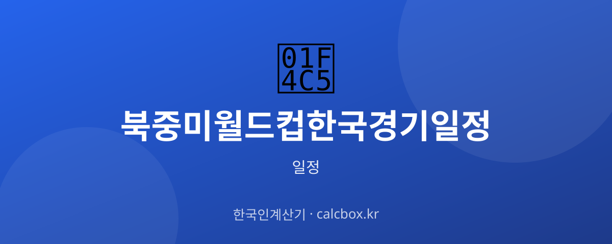

2026 북중미 월드컵 한국 경기 일정 확인법 — 조별리그 챙겨 보는 법
미국·캐나다·멕시코가 공동 개최하는 2026 북중미 월드컵. 대한민국 대표팀의 경기 일정을 어떻게 확인하고 챙겨 보는지 정리했습니다.

2026 북중미 월드컵 한국 대표팀 일정, 무엇을 확인하나요?
2026 FIFA 월드컵은 미국·캐나다·멕시코 3개국이 공동 개최하며, 본선 참가국이 늘어난 확대된 대회로 치러집니다. 대한민국은 본선에서 먼저 조별리그 3경기를 치릅니다.
한국 팬이 확인할 핵심은 대표팀이 속한 조, 조별리그 3경기의 상대·날짜·개최 도시, 그리고 조별리그 통과 시 이어지는 토너먼트 대진입니다. 조 편성은 조 추첨으로 정해집니다.
최신 일정 확인하는 법
가장 공식적인 정보는 FIFA 공식 홈페이지의 대회 일정과 대진입니다. 국내 소식·중계 안내는 대한축구협회(KFA)를 통해 확인할 수 있습니다.
빠르게 보려면 포털 스포츠에서 '월드컵' 또는 '대한민국 축구'를 검색해 일정 탭을 확인하면 됩니다. 대진이 정해지면 상대·도시·킥오프 시간이 안내됩니다.
- FIFA 공식 홈페이지(대회 일정·대진)
- 대한축구협회(KFA)
- 네이버 스포츠 월드컵 일정
- 중계 방송사(지상파·스포츠 채널)
중계·관람·예매 정보
개최지가 북중미라 한국과 시차가 커서, 경기 대부분이 한국에서는 밤~새벽 시간대에 열릴 가능성이 큽니다. KST로 환산된 킥오프 시간을 확인하세요.
월드컵 본선은 지상파·스포츠 채널에서 폭넓게 중계되는 경우가 많지만, 최종 중계 편성과 온라인 플랫폼은 대회 전 발표됩니다. 개막 전 편성을 확인하세요.
알아두면 좋은 포인트
조별리그에서는 같은 조 4개 팀이 각각 맞붙어 성적순으로 다음 라운드 진출 팀을 가립니다. 즉 대표팀의 3경기 상대와 순서는 조 추첨으로 확정됩니다.
구체적 상대·날짜·시간은 조 추첨과 FIFA의 최종 대진 발표 전까지는 확정이 아닙니다. 발표 후에도 세부 편성이 조정될 수 있어 킥오프 전 재확인이 좋습니다.
자주 묻는 질문 (FAQ)
Q. 2026 월드컵은 어디서 열리나요?
2026 FIFA 월드컵은 미국·캐나다·멕시코 3개국이 공동으로 개최합니다. 개최지가 북중미라 한국과 시차가 커서 경기 대부분이 한국 시간으로는 밤·새벽에 열릴 가능성이 큽니다.
Q. 한국 대표팀의 조별리그 상대는 어떻게 정해지나요?
본선 진출국을 대상으로 한 조 추첨으로 조가 편성되고, 같은 조 팀들과 3경기를 치릅니다. 상대·날짜·개최 도시는 조 추첨과 FIFA의 대진 발표로 확정되므로 그 전에는 확정된 일정이 아닙니다.
Q. 한국 경기 일정은 어디서 확인하나요?
가장 공식적인 정보는 FIFA 공식 홈페이지의 대회 일정과 대진이며, 국내 소식·중계 안내는 대한축구협회를 통해 확인할 수 있습니다. 빠르게는 포털 스포츠의 월드컵 일정 탭도 편리합니다.